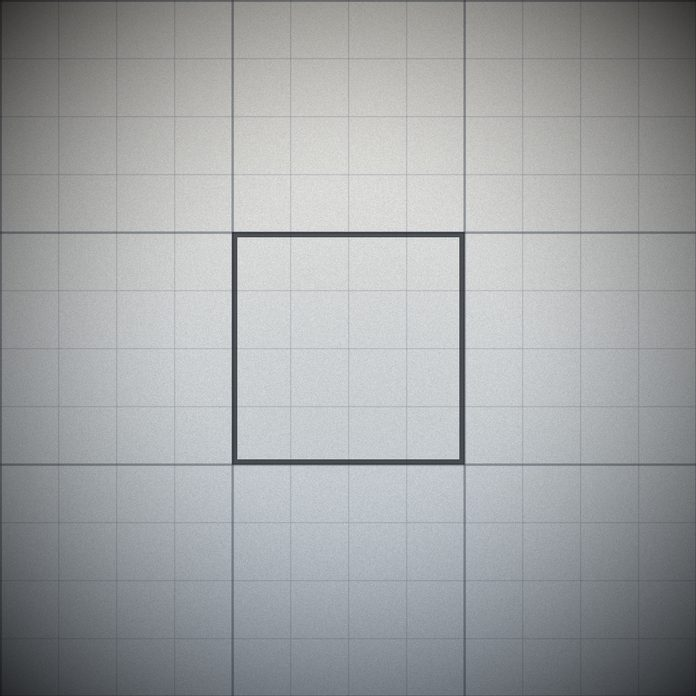

Фритрек и нулевой спринт: Подготовка к работе

Это было самое начало пути. На этом этапе важно было проникнуться основами и настроиться на учёбу. И, возможно, подумать, как новые знания могут повлиять на ваше будущее.
Я записался почти на спор — просто посмотреть, что это вообще такое. Открыл первый урок, увидел слово «вёрстка» и понял, что не знаю о ней ровным счётом ничего. Странно, но именно это меня и успокоило: терять было нечего, оставалось только начать.